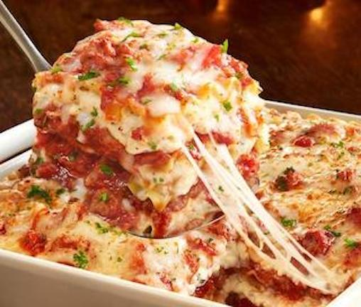

Lasagna

Description
This dish is a world favorite! All ingredients compliment
each other to the point where you don't know what part about
it you like best!
Perhaps you've had lasagna before but nothing quite like this recipe.
If you're into the idea of having a sensory overload I suggest you try this dish!
Ingredients
Meat Sauce
- 2 tablespoons extra-virgin olive oil
- 1 onion, finely chopped
- 2 garlic cloves, finely chopped
- 1/2 pound ground beef
- 6 ounces Italian sausage, removed from their casings and crumbled
- 2 16-ounce cans crushed tomatoes
- 1/4 teaspoon dried basil
- 1/4 teaspoon dried oregano
- Salt, to taste
- Pepper, to taste
Cheese Mixture
- 16 ounces whole milk ricotta cheese
- 1 cup mozzarella cheese, shredded
- 1/2 cup romano cheese, grated
- 1 tablespoon parsley, chopped
- 1/4 teaspoon salt
- 1/8 teaspoon freshly-ground black pepper
- 1 tablespoon basil, chopped
- 1 tablespoon fresh oregano, chopped
- 1 egg, lightly beaten
Lasagna
- 12 cooked or no-boil lasagna noodles
- Cooking spray
- 1 cup mozzarella cheese, shredded
Instructions
- Make the sauce: Heat the olive oil in a
large sauce pot. Add then onion and garlic
and cook about 5 minutes, or until softened
and translucent. Add the ground beef and sausage,
and cook 10 minutes over medium heat, stirring
occasionally. Add the tomatoes, basil, and oregano,
and stir to combine. Simmer for about 20 minutes.
Season to taste with salt and pepper, then chill.
- Make the cheese mixture: Mix together the ricotta,
mozzarella, and romano cheeses, parsley, salt,
pepper, basil, oregano, and egg in a large mixing bowl.
- Build and bake the lasagna: Spray the bottom of a
9-by-13-inch baking dish with cooking spray. Spread
4 ounces of the meat sauce on the bottom of the pan.
Layer 3 lasagna noodles over the meat sauce (they may
overlap slightly). Spread 1 cup of the cheese mixture
over the noodles. Spread 1 cup of meat sauce onto the
cheese mixture. Repeat the layers of noodles, cheese,
and meat sauce two more times. Top with 3 lasagna
noodles, the remaining meat sauce, and shredded mozzarella.
- Spray a large piece of foil with cooking spray and
wrap the pan tightly with it, sprayed side down. Bake
at 325ºF for 45 minutes to an hour, or until the internal
temperature is 165º. Turn the oven off and allow the
lasagna to set up in the warm oven for 30 minutes.
- Cut into squares 2 rows long by 4 rows wide.
Plate and garnish with fresh basil.